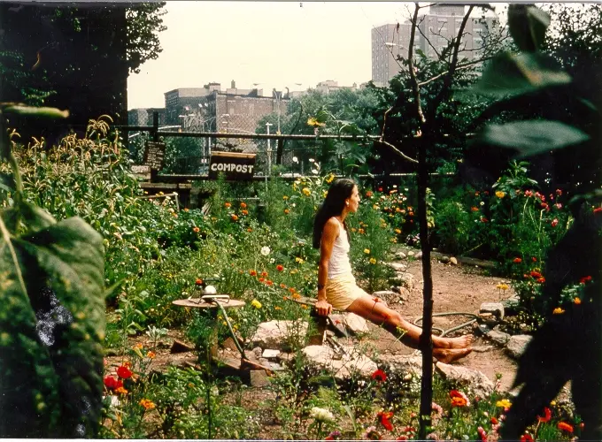
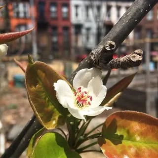
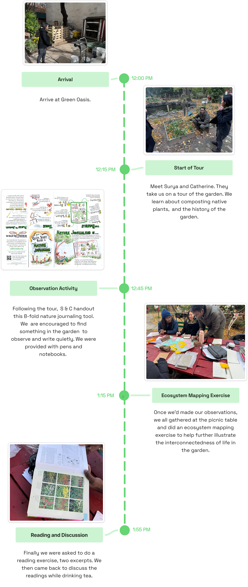
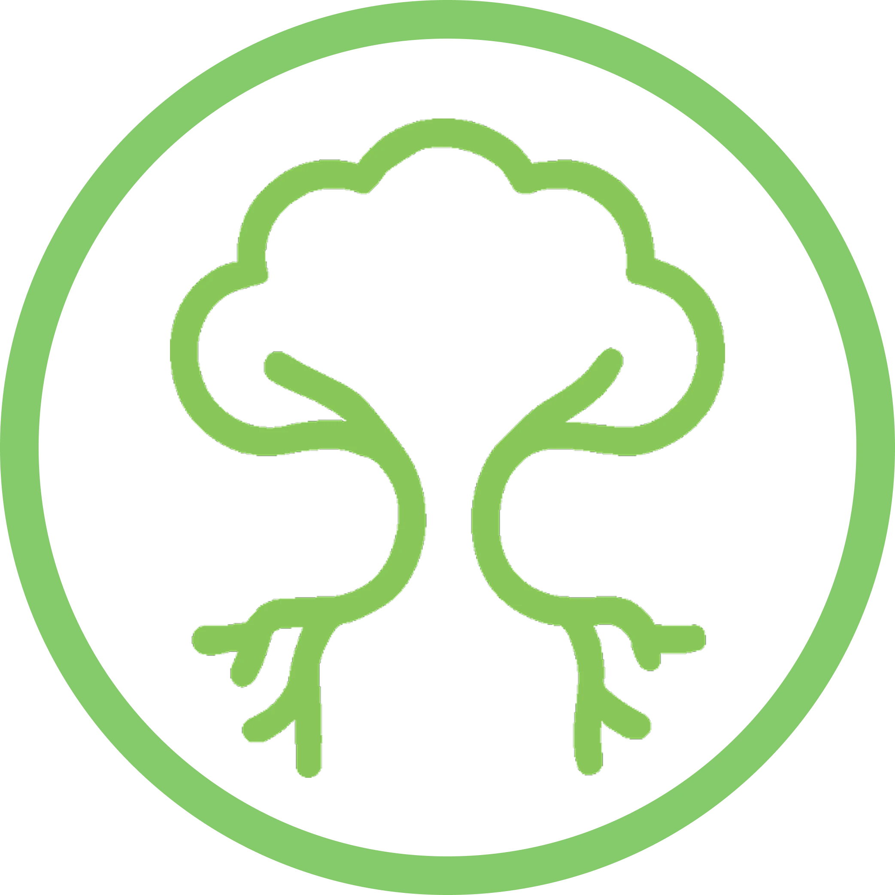
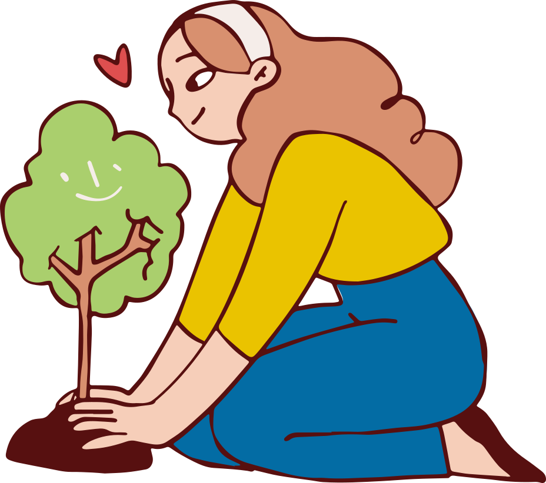
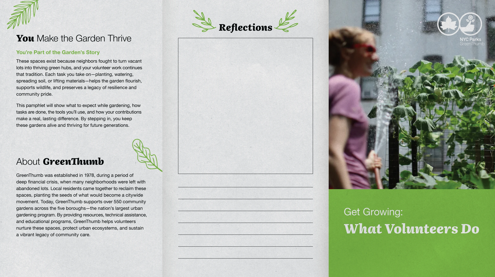
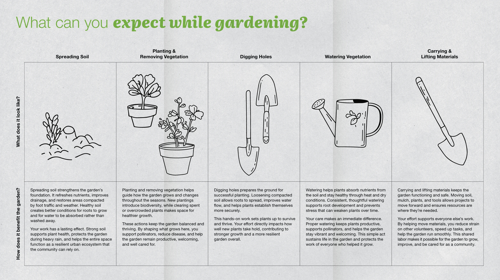
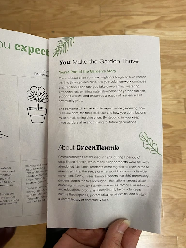
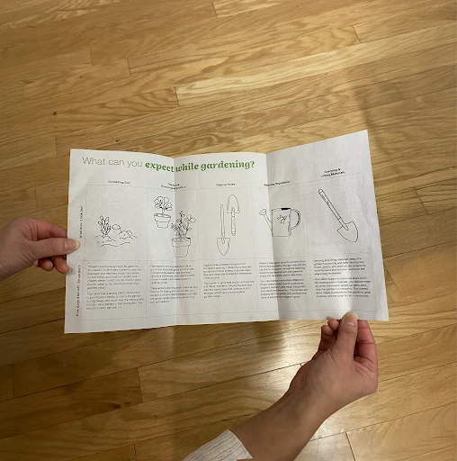

From Crisis to Community: The Birth of Greenthumb

NYC's 1970s fiscal crisis hollowed out city services, hitting lower-income neighborhoods hardest. Buildings were abandoned, residents left, and vacant lots became unsafe dumping grounds.
In response, neighbors reclaimed those lots and built community gardens from the ground up—acts of care, resistance, and local power. The momentum of resistance eventually evolved into a city-run program. Operation GreenThumb was launched in 1978 to support the growing community garden activism and critically gave community gardens legitimate representation.
GreenThumb is NYC's largest community gardening program — powered by neighborhoods, not the city.
City program that empowers rather than controls — providing materials, training, and legitimacy while handing ownership back to the communities it serves.
Challenge
"Recruitment is one of our biggest challenges because our scope is citywide. We keep it as accessible as possible: no portal, no minimum hours, no prior experience."
GreenThumb's job is to facilitate and connect—not to run gardens directly. Each garden is independent, shaped by its neighborhood, leadership, and capacity. That independence is a strength, but it also means the volunteer experience changes from garden to garden. For many people, the hardest part isn't showing up once—it's knowing how to join in, what to do, and how to come back.
What we Did

We used a mixed-method approach moving from Macro to Micro.
We started with system-level interviews with GreenThumb representatives, then interviewed individual garden leaders to understand day-to-day realities. We rounded this out with volunteer-focused research through a survey and a volunteer close-up day (workday observation).
Cross-Network Findings
GreenThumb supports 550+ gardens with a small team. Volunteer program run on ~$10,000/year. City bureaucracy slows down how quickly GreenThumb can respond to garden needs.
"GreenThumb works with a very small budget every year, less than 1% of the city's budget goes to the parks department"
Volunteers Aging Out
Legacy gardeners aging out. Without resources to recruit actively, succession stays unresolved.
"Challenges in the last decade: increasing committed members and bringing young people to gardens."
High Turnover rate
Seasonal volunteers leave before developing. Relationships break each cycle.
"When staff turn over every year, those relationships break. That's the biggest obstacle — continuity."

Two garden leaders, two gardens, same systemic pressure.
CORE INSIGHT
The people most capable of fixing the onboarding problem are the same people too burned out to fix it.
Abby
462 Halsey · Primary GreenThumb contact · 3 yrs
Finding 1 — Burnout: Burnout is common, and continuity can break quickly when leadership changes or conflict happens.
"If you can't get a leader off of their position with another one lined up to take up on all of the responsibilities that they've been holding then that burnout can cause like things to just combust."
Catherine
Green Oasis · New member → volunteer coordinator
Finding 2 — Onboarding: Without visible pathways, people enjoy a visit but don't see themselves as part of the garden long-term.
"It's just, like, if you're not communicating, people don't know how to get involved. And I think we hope that, like, everyone can get involved if they want to. It shouldn't be mysterious."

Survey & Workday Findings
Willingness to Return
Feeling welcome, having clear instructions, and hands-on learning were all things that they felt made their volunteers more likely to return.
Discoverability
Referrals from members and walk-ins during public hours are how they thought new volunteers find their garden most often.
So What does this all mean?
From our findings, we saw that gardens operate very differently, volunteers struggle with motivation and clear next steps, and a small core group carries most of the work without clear ways to pass on legacy—alongside with burnout being tightly linked to a few highly dedicated members holding everything up.
Motivation & Care
What helps people care about and stay motivated to volunteer over time?

Connect to Mission
How can volunteers feel closer to each garden's history, mission, and purpose?
Clear Onboarding
How might we create simple, clear onboarding and entry points that work across many types of gardens?
Every Garden Has a story to tell
If the garden's meaning to the neighborhood isn't visible, volunteers don't develop a reason to care beyond the task of the day. GreenThumb should provide an easy template for gardens to share purpose, priorities, and what to do next.

Early Skill Pathways Grow Roots
When gardens don't capture volunteers' skills early, people stay "extra hands" and drift away. GreenThumb should help gardens capture skills upfront and offer clear pathways into repeatable roles.
Insights & Design Opportunities
How can GreenThumb tackle these issues in a way that's accessible and scalable for all gardens?
The answer had to fit into what already exists — no new systems, no onboarding burden for garden leaders who are already stretched thin.




It reveals what was always true.